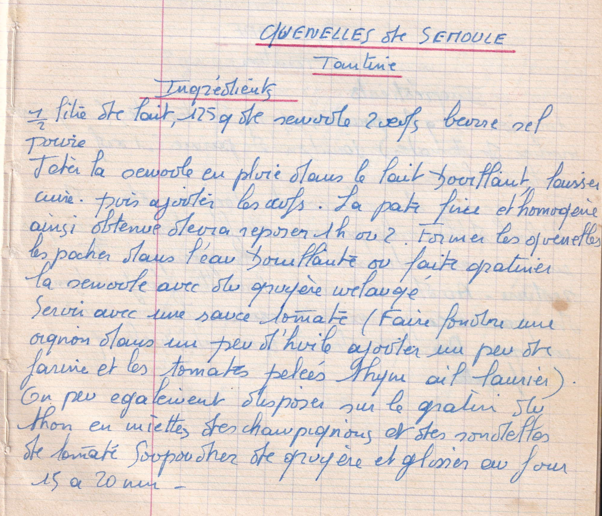

Quenelles de semoule
Tantine

LISTE DES INGREDIENTS
- 1/2 litre de lait
- 125gr de semoule
- 2 oeufs
- Beurre
- Sel, poivre
PREPARATION
- jeter la semoule en pluie dans le lait bouillant
- Laisser cuire
- Puis ajouter les oeufs
- la pate fine et homogène ainsi obtenue devra reposer 1h ou 2
- Former les quenelles
- Les pocher dans l'eau bouillante ou faire gratiner la semoule avec du gruyère mélangé
- Servir avec une sauce tomate (Faire fondre un oignon et les tomates pelées thym ail laurier)
- On peut également disposer sur le gratin du thon en miettes des champignons et des rondelles de tomate
- Saupoudrer de gruyère et glisser au four 15 à 20 min